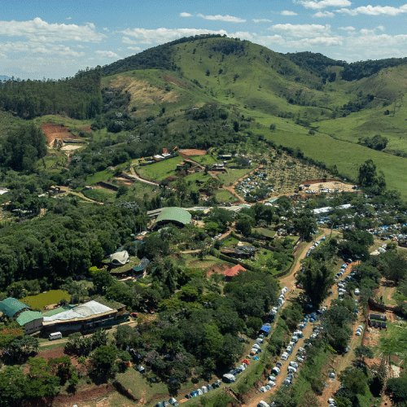
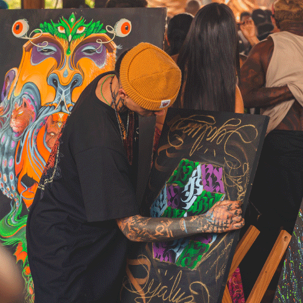

La comunidad que rodea a Parvati no se vive como un “público” tradicional: se construye en el
encuentro.
En los eventos, la música funciona como un lenguaje compartido donde personas de distintos lugares
se conectan
sin necesidad de explicar demasiado. La experiencia se vuelve colectiva: el ritmo ordena el
movimiento, la
atmósfera envuelve, y cada quien aporta su energía a un espacio común.
Con el tiempo, esa red de encuentros crea vínculos que trascienden una fecha o un lugar. La
comunidad aparece
como un mapa vivo: amistades, viajes, colaboraciones y memorias que se reactivan cada vez que la
música vuelve
a sonar.
En los gatherings, la experiencia se organiza alrededor de un “viaje” compartido. No se trata solo de escuchar: se trata de habitar un entorno, sostener una energía colectiva y atravesar la música como si fuera un ritual contemporáneo donde el tiempo se estira y el cuerpo responde.
Ver Experiencia
Para muchas personas, la comunidad también es movimiento: viajar, cruzarse en distintos puntos del mapa y reconocer caras conocidas en un nuevo lugar. Esa repetición de encuentros genera pertenencia: un “hogar” cultural que aparece en cualquier sitio donde la música convoque.
La comunidad impulsa intercambios creativos: artistas, visuales, organizadores y público construyen la escena en conjunto. El resultado no es solo música, sino un ecosistema donde sonido, arte y experiencia se alimentan mutuamente.
Conocer Artistas
La filosofía de Parvati Records permanece abierta y en constante transformación. Más que definir reglas, propone una dirección: explorar, compartir y construir experiencias donde música, arte y comunidad se integran como partes de una misma búsqueda creativa.